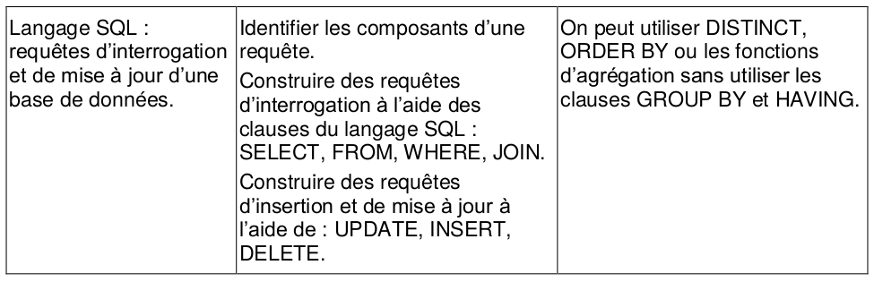
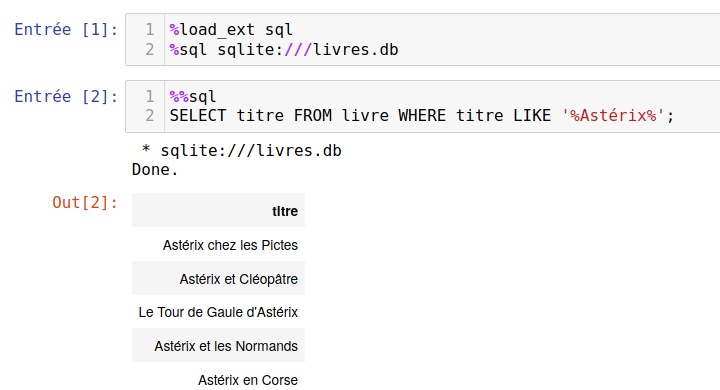
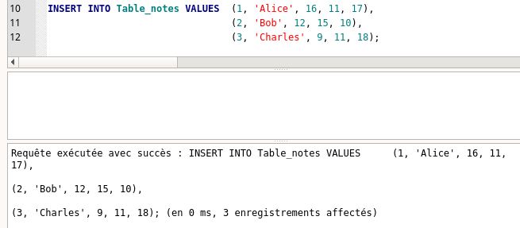

Langage SQL⚓︎
0. Du modèle relationnel au SGBD⚓︎
Les considérations sur le modèle relationnel du cours précédent traitaient plutôt de la structure mathématique des données.
Il s'agissait de déterminer la meilleure structure pour représenter les données et les relations qui les lient.
Il convient maintenant d'aborder la partie logicielle : les SGBD (Systèmes de Gestion de Bases de Données).
Les SGBD jouent le rôle d'interface entre l'être humain et la base de données. Par l'intermédiaire de requêtes, l'utilisateur va consulter ou modifier la base de données. Le SGBD est garant de l'intégrité de cette base, et prévient notamment que les modifications (souvent appelées transactions) ne soient pas préjudiciables à la base de données.
Le langage utilisé pour communiquer avec le SGBD est le langage SQL, pour Structured Query Langage (pour langage de requêtes structurées).
Les SGBD les plus utilisés utilisent le modèle relationnel. Parmi eux, citons Oracle, MySQL, Microsoft SQL Server, PostgreSQL, Microsoft Access, SQLite, MariaDB...
Mais de plus en plus de SGBD non-relationnels sont utilisés, spécialement adaptés à des données plus diverses et moins structurées. On les retrouve sous l'appelation NoSQL (pour Not only SQL). Citons parmi eux MongoDB, Cassandra (Facebook), BigTable (Google)...
La quasi-totalité de ces SGBD fonctionnent avec un modèle client-serveur. Mais le logiciel SQLite peut lui s'utiliser directement sans démarrer un serveur : la base de données est entièrement représentée dans le logiciel. Sa simplicité d'utilisation en fera notre choix pour illustrer cette présentation du langage SQL.
1. Introduction au langage SQL⚓︎

Dans toute la suite, nous allons travailler avec la base de données livres.db qui provient de l'ouvrage paru chez Ellipses, cité en bibliographie.
1.0 Différents moyens d'interroger la base de données⚓︎
Pré-requis : téléchargez la base de données livres.db.
1.0.1 En ligne : sqlonline⚓︎
- Rendez vous sur https://sqliteonline.com/
- Par File / OpenDB, ouvrez le fichier
livres.dbprécédemment téléchargé. - Écrivez votre requête plus cliquez sur Run.

1.0.2 Avec un logiciel externe : DB Browser for SQLite⚓︎
- Installez
DB Browser for SQLite, téléchargeable à l'adresse https://sqlitebrowser.org/ - Ouvrez le fichier
livres.db

1.0.3 Au sein d'un notebook Jupyter⚓︎
- Si nécessaire, installez via le terminal les paquets suivants :
1 2 3
sudo pip3 install jupyter-sql sudo pip3 install ipython-sql sudo apt install python3-sql - Dans un notebook Jupyter, votre première cellule doit être
en ayant bien pris soin de mettre le fichier1 2
%load_ext sql %sql sqlite:///livres.dblivres.dbdans le même répertoire que votre fichier Jupyter.
Ensuite, chaque requête devra être précédée de la ligne %% sql.

Dans toute la suite, les manipulations sont à faire en interrogeant la base de données
livres.db, avec l'une des méthodes indiquées ci-dessus. Cette base de données contient les tables suivantes :
### 1.1. Sélection de données
1.1.1 Exemple 1 : requête basique 🠖 SELECT, FROM, WHERE⚓︎
- Commande :
1SELECT titre FROM livre WHERE annee >= 1990; - Traduction :
On veut les titres de la table «livre» qui sont parus après (ou en ) 1990; - Résultat :

1.1.2 Exemple 2 : requête basique avec booléens 🠖 AND⚓︎
- Commande :
1 2 3
SELECT titre FROM livre WHERE annee >= 1970 AND annee <= 1980 AND editeur = 'Dargaud'; - Traduction :
On veut les titres de la table «livre» qui sont parus entre 1970 et 1980 chez l'éditeur Dargaud; - Résultat :

1.1.3 Exemple 3 : requête approchée 🠖 LIKE⚓︎
- Commande :
1SELECT titre FROM livre WHERE titre LIKE '%Astérix%'; - Traduction :
On veut les titres de la table «livre» dont le titre contient la chaîne de caractères "Astérix". Le symbole % est un joker qui peut symboliser n'importe quelle chaîne de caractères.
- Résultat :

1.1.4 Exemple 4 : renvoi de plusieurs colonnes⚓︎
- Commande :
1SELECT titre, isbn FROM livre WHERE annee >= 1990; - Traduction :
On veut les titres et les ISBN de la table «livre» qui sont parus après 1990. - Résultat :

1.1.5 Exemple 5 : renvoi de toutes les colonnes⚓︎
- Commande :
1SELECT * FROM livre WHERE annee >= 1990; - Traduction :
On veut toutes les colonnes disponibles de la table «livre» pour les livres qui sont parus après 1990.
L'astérisque * est un joker (wildcard en anglais).
- Résultat :

1.1.6 Exemple 6 : renommer les colonnes 🠖 AS⚓︎
- Commande :
1SELECT titre AS titre_du_livre FROM livre WHERE annee >= 1990; - Traduction :
Lors de l'affichage du résulats et dans la suite de la requête (important), la colonne "titre" est renommée "titre_du_livre". - Résultat :

### 1.2. Des opérations sur les données : sélection avec agrégation
1.2.1 Exemple 7 : nombre de résultats 🠖 COUNT⚓︎
- Commande :
1 2
SELECT COUNT(*) AS total FROM livre WHERE titre LIKE "%Astérix%"; - Traduction :
On veut compter le nombre d'enregistrements de la tables livres comportant le mot "Astérix". Le résultat sera le seul élément d'une colonne nommée «total». - Résultat :

1.2.2 Exemple 8 : somme de valeurs numériques 🠖 SUM⚓︎
- Commande :
1 2
SELECT SUM(annee) AS somme FROM livre WHERE titre LIKE "%Astérix%"; - Traduction :
On veut additionner les années des livres de la tables livres comportant le mot "Astérix". Le résultat sera le seul élément d'une colonne nommée «somme». Attention : dans notre cas précis, ce calcul n'a aucun sens... - Résultat :

1.2.3 Exemple 9 : moyenne de valeurs numériques 🠖 AVG⚓︎
- Commande :
1 2
SELECT AVG(annee) AS moyenne FROM livre WHERE titre LIKE "%Astérix%"; - Traduction :
On veut calculer la moyenne des années de parution des livres de la table livres comportant le mot "Astérix". Le résultat sera le seul élément d'une colonne nommée «moyenne». - Résultat :

#### 1.2.4 Exemple 10 : minimum ou maximum de valeurs numériques 🠖 MIN, MAX - Commande :
1 2 | |
On veut trouver la pus petite valeur de la colonne «annee» parmi les livres de la tables livre comportant le mot "Astérix". Le résultat sera le seul élément d'une colonne nommée minimum. Le fonctionnement est identique avec MAX pour la recherche du maximum. - Résultat :

1.2.5 Exemple 11 : tri de valeurs 🠖 ORDER BY, ASC, DESC⚓︎
- Commande :
1 2 3
SELECT titre, annee FROM livre WHERE titre LIKE "%Astérix%" ORDER BY annee DESC; - Traduction :
On veut afficher tous les albums d'Astérix, et leur année de parution, classés par année décroissante. - Résultat :

1.2.5 Exemple 12 : suppression des doublons 🠖 DISTINCT⚓︎
- Commande :
1SELECT DISTINCT editeur FROM livre; - Traduction :
On veut la liste de tous les éditeurs. Sans le mot-clé DISTINCT, beaucoup de doublons apparaîtraient.
- Résultat :

1.3 Des recherches croisées sur les tables : les jointures⚓︎
Observons le contenu de la table «emprunt» :
1 | |

Le contenu est peu lisible. Souvenons-nous du diagramme de la base de données.

Pour que la table «emprunt» soit lisible, il faudrait (dans un premier temps) que l'on affiche à la place de l'ISBN le titre de l'ouvrage. Or ce titre est disponible dans la table «livres». On va donc procéder à une jointure de ces deux tables.
#### 1.3.1 Exemple 13 : jointure de deux tables 🠖 JOIN - Commande :
1 2 | |
L'expression
1 | |
Il est donc très important de spécifier ce sur quoi les deux tables vont se retrouver (ici, l'ISBN)
- Résultat :

#### 1.3.2 Exemple 14 : jointure de trois tables 🠖 JOIN
Le résultat précédemment a permis d'améliorer la visibilité de la table «emprunt», mais il reste la colonne «code_barre» qui est peu lisible. Nous pouvons la remplacer par le titre du livre, en faisant une nouvelle jointure, en invitant maintenant les deux tables «livre» et «usager».
- Commande :
1 2 3
SELECT u.nom, u.prenom, l.titre, e.retour FROM emprunt AS e JOIN livre AS l ON e.isbn = l.isbn JOIN usager AS u ON e.code_barre = u.code_barre; -
Traduction : Il faut bien comprendre que la table principale qui nous intéresse ici est «emprunts», mais qu'on modifie les valeurs affichées en allant chercher des correspondances dans deux autres tables. Notez ici que des alias sont donnés aux tables (par AS) afin de faciliter l'écriture.
-
Résultat :

1.4 Exercice d'application : The SQL Murder Mystery⚓︎
Cet exercice en ligne est proposé le Knight Lab de l'université américaine Northwerstern University.

Le point de départ de l'histoire : un meurtre a été commis dans la ville de SQL City le 15 janvier 2018.
À partir de ce point de départ et d'une base de données dont le diagramme est donné ci-dessous, il s'agit de trouver le meurtrier.

Rendez-vous sur cette page, et bonne enquête à coups de requêtes !
2. Création et modification d'une base de données⚓︎
rappel :
L'objectif est de créer la table suivante :
| id | Nom | Maths | Anglais | NSI |
|---|---|---|---|---|
| 1 | Alice | 16 | 11 | 17 |
| 2 | Bob | 12 | 15 | 10 |
| 3 | Charles | 9 | 11 | 18 |
2.1 Exemple 15 : Création d'une table 🠖 CREATE TABLE⚓︎
- Commande :
1 2 3 4 5 6 7
CREATE TABLE Table_notes ( Id INTEGER PRIMARY KEY, Nom TEXT, Maths INTEGER, Anglais INTEGER, NSI INTEGER ); - Remarques :
C'est l'utilisateur qui spécifie, éventuellement, quel attribut sera une clé primaire.
- Résultat :
Dans DB Browser, il faut avoir au préalable créé une nouvelle base de données.

2.2 Exemple 16 : Insertion de valeurs 🠖 INSERT INTO, VALUES⚓︎
-
Commande :
1 2 3
INSERT INTO Table_notes VALUES (1, 'Alice', 16, 11, 17), (2, 'Bob', 12, 15, 10), (3, 'Charles', 9, 11, 18); -
Résultat :

2.3 Exemple 17 : Intérêt de la clé primaire⚓︎
Essayons d'insérer un 4ème enregistrement ayant le même id qu'un autre élève.
-
Commande :
1INSERT INTO Table_notes VALUES (3, 'Denis', 18, 10, 12); -
Résultat :
La contrainte de relation est violée : le SGBD «protège» la base de données en n'acceptant pas la proposition d'insertion. La base de données n'est pas modifiée.
-
Remarque : Il est possible de «déléguer» la gestion des valeurs de la clé primaire avec l'instruction
AUTOINCREMENT. La déclaration de la table et l'insertion des valeurs serait :
et le résultat serait :1 2 3 4 5 6 7 8 9 10 11 12
CREATE TABLE Table_notes ( Id INTEGER PRIMARY KEY AUTOINCREMENT, Nom TEXT, Maths INTEGER, Anglais INTEGER, NSI INTEGER ); INSERT INTO Table_notes (Nom, Maths, Anglais, NSI) VALUES ('Alice', 16, 11, 17), ('Bob', 12, 15, 10), ('Charles', 9, 11, 18);

L'attribut id est donc géré automatiquement par le SGBD.
2.4 Exemple 18 : Modification d'une valeur 🠖 UPDATE, SET⚓︎
Pour modifier la note de Maths d'Alice :
- Commande :
1UPDATE Table_notes SET Maths = 18 WHERE Nom = 'Alice';
2.5 Exemple 19 : Suppression d'un enregistrement 🠖 DELETE⚓︎
Pour supprimer totalement la ligne concernant Charles :
- Commande :
1DELETE FROM Table_notes WHERE Nom = 'Charles';
Si une autre table contient par exemple l'attribut id comme clé étrangère, et si l'id de Charles fait partie de cette table, le SGBD refusera de supprimer cette ligne, afin de ne pas violer la contrainte de référence.
2.6 Exemple 20 : Suppression totale d'une table 🠖 DROP TABLE⚓︎
Pour supprimer totalement et défitivement la table :
- Commande :
1DROP TABLE Table_notes;
Là encore, si une autre table est reliée à Table_notes par une clé étrangère, la suppression sera bloquée par le SGBD.